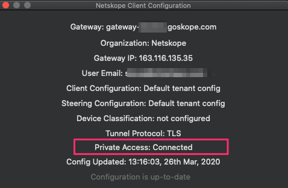
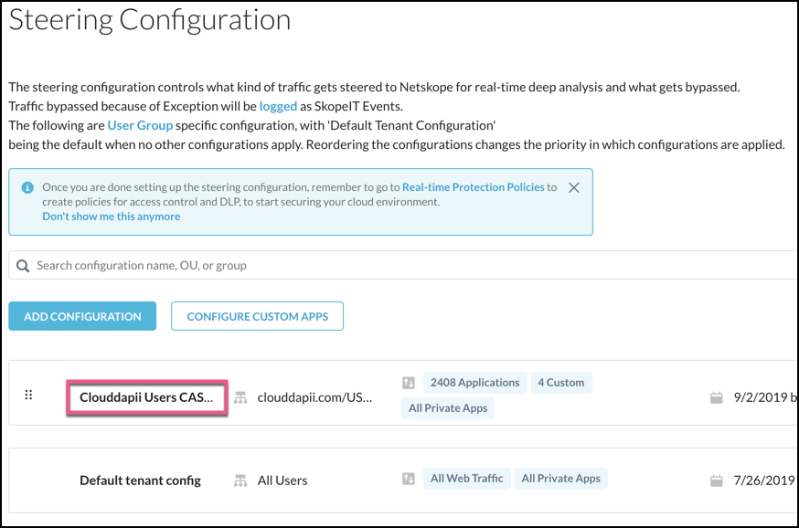
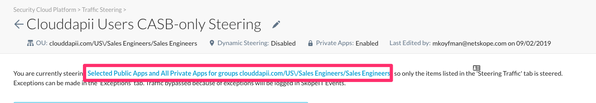
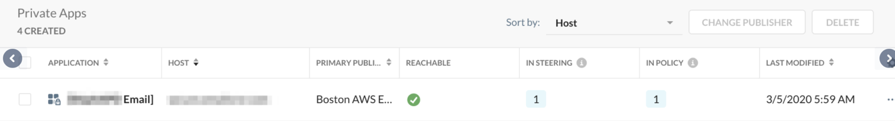

General Troubleshooting Methods
General troubleshooting involves checking:
the Netskope Client
the Real-time Protection policy
Tip
Inline Policies are now called Real-time Protection policies.
the private app.
Netskope Client
Right-click on the Netskope Client icon in the system tray and select Configuration. Private Access should show as Connected.
 If the Configuration shows Private Access as Disabled, make sure the Steer all Private Apps option is enabled in the Steering Configuration settings for your tenant. Go to Settings > Security Cloud Platform > Steering Configuration.
If you have multiple Steering Configurations, click on the name of the Steering Configuration you are using for NPA to open the details page.
 Tip
If using only the Default tenant configuration, click Edit in the upper right corner.
The details page for each steering configuration has a link that names what's being steered to NPA.
 Click the text to edit the configuration, and then enable Steer all Private Apps.

If the Client never enables, it could be that the Netskope Client is trying to register/enroll to the closest Netskope POP to enable NPA before the device’s network connection is active. Currently, the Netskope Client does not check again for network status.
Workaround: If you are displaying the Netskope Client icon in the system task bar (Windows) or menu bar (Mac), disable and enable the Netskope client to ensure it's connected.
If Yes, factor that NPA uses its own domain names for connecting to the Netskope Gateway and Stitcher. You will need to bypass the following URLs in order for the Client to connect successfully:
Component | URL | Port | Notes |
|---|---|---|---|
Client |
Prior to February 2020: | TCP 443 (HTTPS) | |
Publisher |
Prior to February 2020: | TCP 443 (HTTPS) UDP 53 (DNS) | DNS is not required to be allowed outbound if there is a local network DNS server internally. |
Client and Publisher |
Prior to February 2020: Contact your Netskope SE, TSM, or Support for your tenantid and mp-name. | TCP 443 (HTTPS) | This is needed one time only during the registration. Example URL: MP-Name Variables:
|
Open the npadebuglog.log file in a text editor. Search for the name of your Private App as defined in the Private App in the Netskope tenant.
For windows: C:\Users\Public\netSkope\npadebuglog.log
For MacOS: /Library/Logs/Netskope/npadebuglog.log
If you can’t find any mention of your Private App name in this file, then you will not be able to connect to the Private App. This may be a result of the user not being authorized for this Private App (check the Real-time Protection policy).
Open up the nsdebuglog.log file and search for the word enroll. You may see more details on why the enrollment process is not working for the user.
Real-time Protection Policy
In the Netskope UI, go to Policies > Real-time Protection and verify that the User/OU authorizes the user for the private application.
Netskope Publisher and Private App Connection
If the Private App is defined with a list of TCP/UDP ports, then only the first port is checked for connectivity. The status is not dependent upon all defined ports being accessible. This may lead to a false sense that the Publisher can successfully connect to all defined ports successfully.
|  |
SSH to the Publisher (username is
centos)Choose Option #3 to exit out of menu.
Enter
su. This will enter you into root.Enter
yum install traceroute -y.Try to traceroute to the local IP address/domain name of the private application.
SSH to Publisher.
Enter
su. This will enter you into root.Enter
yum install telnet -y.Try to telnet to the local IP address/domain name of the private application:
telnet <hostname> <port>.
If it connects, everything is good. If it doesn’t then there is a network or host security policy that is blocking the publisher from communicating to the server for the defined port.
Private Application
This happens when the Publisher is deployed inside of an IaaS environment like AWS. Check the Security Group of the host. All traffic to the defined private application will be seen on the local network as having originated from the Client IP address.